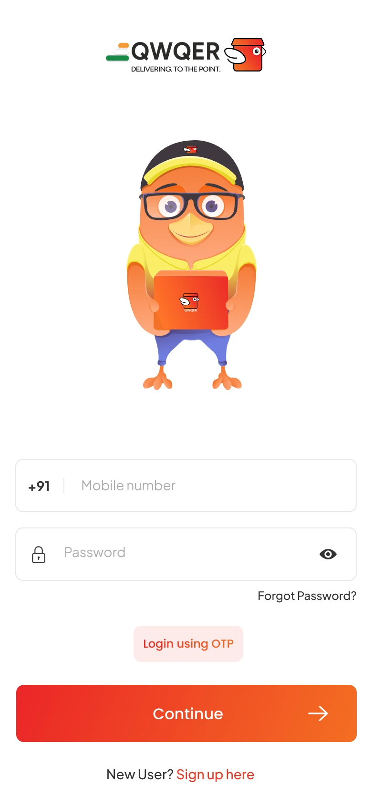
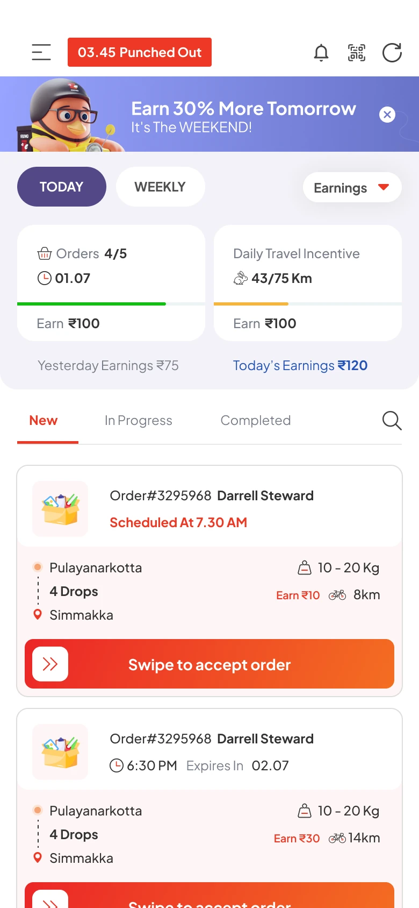
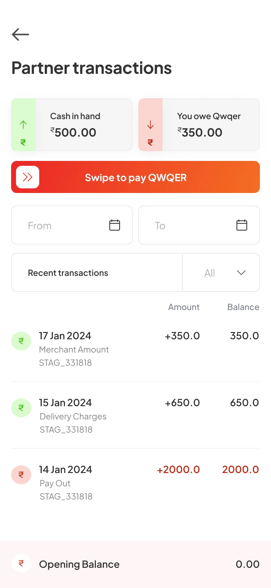
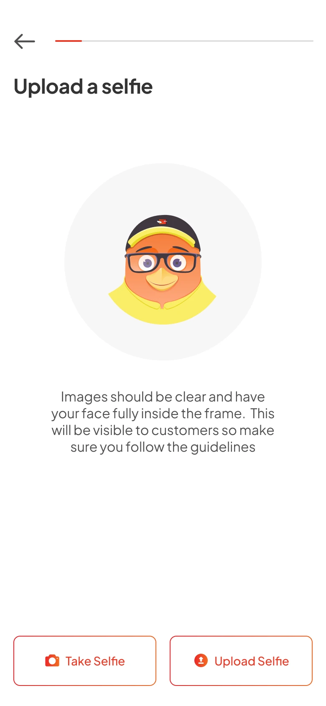
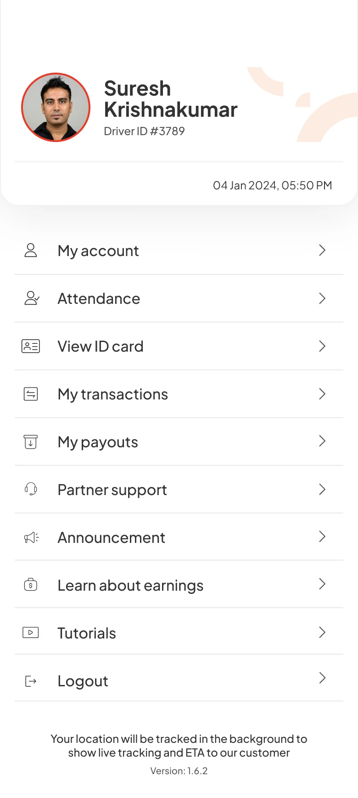

Listen to the users
Interviews explored daily hurdles, onboarding confusion, order decisions, and what kept partners motivated.
Case study / 02Delivery platform
QWQER
A delivery-partner app redesign that clarified onboarding, surfaced earning opportunities, and used progression to make daily work more motivating.
The first screen makes account access unmistakable while keeping QWQER’s character at the center.

01 / Context
Behind the revampAcross Bengaluru and Kerala, delivery partners depended on the app to join the platform, understand orders, and track what they could earn.
The existing experience introduced friction at the moments when partners needed confidence most.
Onboarding requirements were unclear, incentives were difficult to discover, long-distance orders lacked enough context, and earning potential was hard to predict.
Partners could not easily tell which documents were required or what came next.
Rewards existed, but their value and availability were difficult to understand.
Long-distance requests did not clearly communicate effort versus reward.
Partners lacked a dependable view of earning potential and progress.
02 / Discovery
Listening before designingThe discovery phase combined partner conversations with market analysis to separate surface complaints from the deeper issues affecting confidence and motivation.
Interviews explored daily hurdles, onboarding confusion, order decisions, and what kept partners motivated.
The experience was reviewed from first sign-up through order acceptance, completion, and earnings visibility.
Competitor analysis revealed established patterns and opportunities for QWQER to communicate value more clearly.
03 / Design response
Clarity plus motivationThe redesign treated clarity and motivation as parts of the same system: help partners begin confidently, understand each opportunity, and see how their work adds up.
Required documents were made explicit, and the journey was broken into clear, manageable steps.
Visual guidance reduced uncertainty and helped new partners understand key actions before entering live work.
Earnings, order value, and progress were brought into view so partners could make better-informed decisions.
Levels and rewards introduced a sense of progress without getting in the way of core delivery tasks.
Four production screens showing the redesigned partner experience as a connected system.




04 / Outcome
One delivery at a timeThe final direction made it easier for partners to start, understand what they could earn, and recognize progress through continued work.
Clear requirements and guided steps reduced uncertainty at sign-up.
Levels and rewards gave continued activity a stronger sense of momentum.
Partners could better understand earnings and evaluate available work.
Recognition and feedback made the platform feel more supportive of partner effort.
Gamification was not used as decoration. It was layered onto a clearer foundation so that progress, earnings, and recognition reinforced the work partners were already trying to complete.